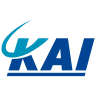
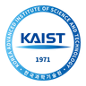
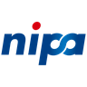

이력서
인간 중심 AI
사람과 AI를 중심으로 인터랙티브 시스템을 만들고 연구합니다.
방법과 도구
- 현장 인터뷰
- 참여형 설계
- 접근성 연구
- 요구사항 정의
- 상호작용 흐름
- 포용적 디자인
- 멀티모달 인터페이스
- 빠른 프로토타이핑
- Human-in-the-loop 설계
- 에이전트 아키텍처
- BM25 기반 검색 증강 생성(RAG)
- 음성 인식(faster-whisper)
- OCR(RapidOCR)
- 이상 탐지(PyOD)
- 데이터 검증(Pandera)
- 확장현실(XR)
- 실물 프로토타입
- 혼합 방법 평가
- 주제 분석
- 사용성 평가
- 대응표본 벤치마크
- Python
- TypeScript
- SQL
- C++
- C#
- R
- Java
- Unity
- Unreal Engine
- OptiTrack
- Meta Quest Pro
- HoloLens 2
GAIA: 접근 가능한 게임 플레이를 위한 대화형 AI
GAIA의 현장 연구와 프로토타입 개발을 이끌고 있습니다. 장애인 단체의 협조로 참여자를 모집해 연구팀과 함께 약 30명을 심층 인터뷰하고 약 200명을 설문 조사했습니다. 같은 장애라도 필요한 지원이 달라 GAIA의 역할이 사람마다 능력, 과업, 보조기술에 따라 바뀌도록 했고 언제 개입할지와 무엇을 플레이어가 직접 결정할지도 정했습니다. 데스크톱 프로토타입을 만들었으며 더 빠른 음성 디코더는 같은 녹음 120개로 기존 디코더와 비교한 결과 사전에 정한 정확도 기준을 충족하지 못해(WER 3.95% 대 2.77%) 채택하지 않았습니다.
DQM v1.0: 기업 데이터 품질 자동화 엔진
정부 지원 연구개발 과제에서 AI 데이터 플랫폼의 RAG·그래프 서비스에 쓰일 원천 테이블을 점검·보정하는 DQM v1.0을 단독으로 설계·개발했습니다. DQM은 데이터 오류를 탐지·보정하고 기본키, 외래키, 인덱스, 컬럼 단위 품질 규칙을 추론합니다. 검토자가 같은 입력에서 같은 결과를 얻도록 탐지를 결정론적으로 설계했습니다. LLM 대신 규칙, 통계 검사, 이상 탐지기가 판단하며 확실하지 않은 후보는 자동으로 고치지 않고 사람이 검토하는 큐로 보냅니다. 제출한 소프트웨어는 2026년 8월 와이즈스톤 외부 시험에서 스카이월드와이드가 정한 4개 기준을 모두 충족했습니다.
The Golden Tewak: 해녀 공동체와 함께 만든 문화유산 게임 콘셉트
The Golden Tewak은 제주 현장 조사와 참여형 워크숍을 거쳐 만든 기능성 게임 콘셉트로 해녀의 물질, 생태 지식, 공동체 가치를 담았습니다. 연구 결과 종합, 게임 메커니즘과 서사 개발, 공동체 검토에 참여했습니다. 두 차례에 걸친 공동 설계 워크숍, 4일간의 디자인 스프린트, 공동체 검토를 거치며 호흡 메커니즘, 플랫폼, 시각 디자인이 다듬어졌습니다.
XR 인터페이스를 위한 실시간 공간 적응
국제 컨소시엄 연구에서 공간 구조, 장애물, 사용자 위치에 따라 반응하는 XR 인터페이스의 적응형 배치와 시각·햅틱 피드백을 구현해 컨소시엄의 연구 시스템에 통합했습니다.
KF-21 위장 디자인 및 피탐성 분석
KF-21 보라매의 위장 색상과 패턴을 개발하고 영상 기반 피탐성 분석을 도왔습니다. 환경 이미지와 시뮬레이션으로 고도·지형·기상 조건별 제안을 비교했습니다. 선정된 디자인 방향은 산학 과제 결과물에 반영됐습니다.

한국항공우주산업(KAI)IoT 도로변 센싱 및 AI 교통 객체 추적
IoT 하드웨어, 외장 케이스 설계, 3D 프린팅, AI 교통 객체 추적 파이프라인을 결합한 도로변 센싱 프로토타입을 개발했습니다. 물리 센서와 탐지 모델을 하나의 시스템으로 묶기 위해 데이터 전처리, 탐지 흐름, 앵커 박스 조정까지 다뤘습니다.
최종 3인 선정(개인 참가) – 크래프톤 FDE 트랙
개인 자격으로 참가해 약 25개 출품작 가운데 최종 3인에 선정됐습니다. 가상의 현업 담당자와 함께 요구사항을 정의하고 작동하는 애플리케이션을 AI 에이전트로 만들어 시험했으며 블라인드 심사용 제출물까지 4시간 안에 혼자 완성했습니다.
우수발표논문상 – 접근성 AI 연구
장애인 플레이어 112명의 응답을 바탕으로 접근성 요구사항과 게임 AI 설계 원칙을 제시한 연구에 제2저자로 참여했습니다. 접근성 AI 관점에서 연구의 틀을 잡고 장벽을 분석해 설계 원칙을 도출하는 작업을 도왔습니다.
최우수상(1위) – Education4.0 Q 조교 활동보고서
KAIST Education4.0 Q 교수학습 모델에서 질문 중심 수업 지원을 기획·운영하고 성찰한 과정을 조교 활동보고서로 정리했습니다.

KAIST기후테크 창업팀 선정
팀 대표로 KAIST 아산 UniverCT 프로그램에 참여해 AR 재활용 리워드 서비스 Glean의 사업 기획, AI 모델링, 특허 개발을 이끌었습니다. 기후테크 창업팀으로 선정되어 아산나눔재단의 멘토링과 사업화 지원을 받았습니다.
대상(한동대학교 총장상) – 미디어 파사드 부문
대형 건축물 디스플레이를 위해 팀이 만든 실제 구동 가능한 미디어 파사드 프로토타입에서 Unreal Engine 구현을 이끌었습니다.
우수상 – 시선 추적 VR 연구
「안구 운동을 위한 시선 추적 기반 VR 인터랙티브 게임」의 제4저자로 시선 제어 VR 프로토타입의 연구와 개발에 참여했습니다.
우수상(스코넥엔터테인먼트 대표이사상) – 메타버스 개발자 경진대회
Team EyeCU의 일원으로 안구 근육 재활 운동을 위한 Meta Quest Pro용 시선 제어 애플리케이션 Watchers의 VR 콘텐츠와 사용자 경험을 설계했습니다.

정보통신산업진흥원스코넥엔터테인먼트한동대학교 총장상
Team CGreen의 대표로 XR 재활용 리워드 서비스 Glean의 창업 제안과 경진대회 출품을 이끌었습니다. 이 아이디어로 한동대학교 총장상을 받았습니다.
우수발표상 – VR 노출 연구
개 공포증 치료를 위한 단계적 VR 노출 예비 연구에 제2저자로 참여했습니다. 가상 공간에서 개와의 거리를 단계별로 조절해 노출 강도를 바꾸는 설계를 도왔습니다.
본선 14팀 선정 – 글로벌 창업 챌린지
152개 지원팀 가운데 본선 14팀에 선정됐습니다. 블록체인 창업 제안서를 팀과 함께 준비하고 경영대학·벤처투자·산업 전문가 심사단 앞에서 발표했습니다.
한국과학기술원 (KAIST)
한국과학기술원 (KAIST)
한동대학교
아테네오 데 마닐라 대학교
총 21편: 제1저자 또는 단독 저자 7편, 공동 제1저자 또는 동등 기여 3편, 공저자 11편
2026
1 (2026). Designing and evaluating an AI assistant for players with disabilities: Empirical findings and future design implications. Master's thesis, Korea Advanced Institute of Science and Technology. Advisor: Young Yim Doh. (단독 저자) MGCT 26010 KAIST Library ↗
석사 연구에서는 게임 AI가 정보 제공, 지각 보조, 조작 지원을 플레이어의 능력에 맞게 조합해 접근성을 뒷받침하는 방법을 탐구했습니다.
2, & Doh, Y. Y. (2026). Toward Ludic AI: Proposing an evaluation framework for the ludic competence of game-playing AI. Digital Game Research, 2(1), 29–59. (제1저자) DOI ↗ Article ↗
게임 AI가 승리만 추구하는 것이 아니라 함께하는 놀이를 지속할 수 있는지 평가하기 위해, 놀이 역량을 세 가지 행동 차원으로 정의했습니다.
3, Lee, S., Jeong, S., & Doh, Y. Y. (2026). Patterns of preference for AI assistants in game accessibility among players with disabilities: An exploratory analysis of functional barriers and intervention timing. Journal of Korea Multimedia Society, 29(6), 885–904. (제1저자) DOI ↗ DBpia ↗
장애인 플레이어 112명을 설문 조사한 결과, 초기 설정 부담을 줄이고 접근성 지원을 자동화하는 AI에 대한 선호가 가장 높았습니다. 분석은 탐색적 수준입니다.
4, Seo, G., Jeong, S., & Doh, Y. Y. (2026). Design principles of Game AI Assistant (GAIA) for players with disabilities: Accessibility needs and ethical concerns. Proceedings of the 31st International Conference on Intelligent User Interfaces (IUI '26), 144–155. ACM. (제1저자) DOI ↗
AI의 개입 시점, 상호작용 방식, 맞춤 설정, 자동화가 몰입과 플레이어의 주도권, 성취감에 미치는 영향을 살펴봤습니다.
5Lee, S., , Jeong, S., & Doh, Y. Y. (2026). Design principles for game AI assistant: Analyzing functional barriers and accessibility requirements of players with disabilities. Korea Game Society Spring Conference 2026, 83–88. (제2저자)
장애인 플레이어 112명의 응답을 3단계 요구사항 프레임워크로 정리한 논문입니다. 설계 우선순위는 기본 접근 보장, 사용 부담 완화, 개인화 지원 순입니다.
2025
6Park, E., , Eum, K., Choi, E., Oh, H., & Doh, Y. Y. (2025). Press start to continue: A thematic analysis of the iterative process of hardcore players with disabilities adapting to gameplay difficulties. Extended Abstracts of the CHI Conference on Human Factors in Computing Systems (CHI EA '25), Paper 446, 7 pp. ACM. (공동 제1저자) DOI ↗
장애인 하드코어 플레이어가 개인 전략, 보조 도구, 사회적 지원을 함께 활용하는 과정과 유연하지 않은 게임 환경이 플레이 중단으로 이어질 수 있는 이유를 분석했습니다.
7, & Doh, Y. Y. (2025). The identity and role of game NPCs: Past, present, and future. [Conference presentation]. Proceedings of the 1st DiGRA Korea Conference, 1–39. (제1저자) Source ↗
NPC의 발전 과정을 검토하고 자율성이 높아지더라도 게임 규칙, 캐릭터 정체성, 플레이어의 주도권은 지켜야 한다고 논증했습니다.
8Oh, H., Eum, K., Park, E., , Seo, J., Choi, E., & Doh, Y. Y. (2025). RAG-enhanced LLM chatbot for game accessibility: Development and evaluation of GAIA. HCI Korea 2025, 254–259. (제4저자) DBpia ↗
Street Fighter 6용 RAG 어시스턴트를 평가한 결과, 검색 유사도가 높다고 해서 플레이 중 안내가 반드시 정확하고 따라 할 수 있는 것은 아니었습니다.
2024
9Choi, E., , & Doh, Y. Y. (2024). Prompting-based LLM framework for ethical decision-making in the trolley dilemma: Embedding Hofstede's cultural dimensions theory (PLETH). Korean Artificial Intelligence Association Fall Conference 2024, Poster 38. (공동 제1저자)
문화 프롬프팅 프레임워크 PLETH는 언어 모델 응답의 문화적 적합성과 일관성을 높였습니다. 평가에서는 문화적 우선순위와 인권 규범이 충돌할 때 생기는 윤리적 쟁점도 드러났습니다. 판단과 채점을 모두 언어 모델이 맡았으므로 결과는 아직 탐색적 수준입니다.
10Eum, K., Park, E., , & Doh, Y. Y. (2024). GAIA: A game AI assistant service framework integrating problem-solving and emotion regulation strategies. Korea Computer Graphics Society Conference 2024, 103–104. (공동 제1저자) DBpia ↗
GAIA 프레임워크는 문제 해결 지원과 감정 조절 지원을 분리해 플레이어의 필요에 따라 서로 다른 방식으로 돕습니다.
11Park, E., , Kim, K., Yi, H. W., Lootah, M. K., & Doh, Y. Y. (2024). Challenges and opportunities of game NPC research using LLM: A scoping review. Korea Game Society Spring Conference 2024, 165–170. (제2저자)
초기 LLM 기반 NPC 연구 6편을 다룬 주제범위 문헌고찰입니다. 환각, 응답 지연, 기억, 평가의 미해결 과제를 정리하고 설계 근거를 더 분명히 밝혀야 한다고 제안합니다.
12Kim, Y. B., & (2024). A technical literature review of distributed management structure: Focusing on the multi-label system of HYBE Co., Ltd. Korea Society of Technology Innovation Spring Conference 2024, Abstract Book, 69. (교신저자)
이 문헌고찰은 HYBE의 멀티 레이블 체제를 분권형 운영 모델로 보고 의사결정 권한, 창작 자율성, 공유 인프라, 조직 간 조정을 중심으로 검토합니다.
13Kim, Y. B., & (2024). From BigHit to HYBE: Sentiment analysis and strategic transition through news data. Korea Society for Innovation Management & Economics Summer Conference 2024, Abstract Book, 73. (교신저자)
국내 뉴스 기사 45,393건을 분석해 BigHit에서 HYBE로 전환하는 시기의 미디어 논조를 추적한 연구입니다. 혁신과 내부 갈등을 다룬 보도에 특히 주목합니다.
2023
14, Yoo, S., Lee, Y., Kim, Y., Kim, H., & Han, D. (2023). Analysis of the effects of positive and negative VR game contents on enhancing environmental awareness based on self-reliant and team-based play styles. Journal of the Korea Computer Graphics Society, 29(3), 137–147. (제1저자) DOI ↗
학생 65명이 참여한 4개 조건의 VR 실험에서 긍정·부정 프레이밍보다 콘텐츠 제시 순서와 사회적 플레이 방식이 단기 환경 인식에 더 큰 영향을 미쳤습니다.
15Yoon, D., Park, S., Song, Y., , & Chung, D. (2023). Methodology for improving the performance of demand forecasting through machine learning. Research Square [Preprint; not peer reviewed]. (제4저자) Preprint ↗
군집화, LASSO, LSTM을 결합한 예측 파이프라인이 소매 상품 2,548개에서 비교 모델보다 높은 성능을 보였습니다.
16, Kim, H., Kim, Y., Kim, M., Kim, S., & Han, D. (2023). A study on the effect of group commitment on improving awareness of recycling through gamification. HCI Korea 2023, 626–630. (제1저자) DBpia ↗
개인 참여자는 아무도 완수하지 못한 재활용 과업을 모든 협동 집단이 완료했습니다. 환경 태도의 변화는 특정 행동에 한정됐으며 측정 기간도 짧았습니다.
17Kim, Y., , Lee, Y., Kim, H., Lee, Y., & Han, D. (2023). Enhancing participation in rehabilitation for diplopia through gamification. Korea Computer Graphics Society Conference 2023, 149–150. (제2저자) DBpia ↗
안구 운동을 게임화한 7명 규모의 예비 연구에서 참여를 이끌어 낼 가능성이 보였습니다. 임상 효과는 아직 검증하지 않았습니다.
18Lee, Y., Kim, Y., Kim, H., , Lee, Y., Im, J., & Han, D. (2023). Eye-tracking-based VR interactive game for eye exercises. Proceedings of the Korea Multimedia Society Fall Conference, 26(2), 21–23. (제4저자)
단속성 안구 운동과 부드러운 추적 안구 운동을 게임으로 만든 시선 제어 VR 프로토타입입니다. 초등학생 24명의 피드백은 구현 가능성을 뒷받침하지만 치료 효과의 근거는 아닙니다.
2022
19Yoo, S., , Kim, H., Lee, Y., Kim, S., Kim, Y., Han, S., & Han, D. (2022). A study on systematic exposure with space and distance factors in VR therapy of cynophobia. Proceedings of the Korea Multimedia Society Spring Conference, 25(1), 17. (제2저자)
가상 환경에서 개와의 거리를 조절해 노출 강도를 단계적으로 바꾸는 예비 설계를 제안했습니다. 초록은 공포 감소를 보고하지만 표본 규모와 통계 결과는 제시하지 않습니다.
20Park, S., Yoon, D., Song, Y., , & Chung, D. (2022). Enhancing predictive-model performance through clustering. Korean Society of Management Information Systems Spring Joint Conference, 267–273. (제4저자) eArticle ↗
소매 상품 1,624개를 군집화한 뒤 예측 모델 5개를 비교했습니다. 초록은 이 접근법이 유망하다고 하지만 구체적인 성능 개선 폭은 보고하지 않습니다.
21Yoon, D., Park, S., Song, Y., , & Chung, D. (2022). A method for enhancing demand forecasting performance by combining regression coefficient shrinkage, clustering, and LSTM. Korea Intelligent Information Systems Society Fall Conference 2022, Abstract, 35. (제4저자) DBpia ↗
소매 상품 2,693개를 대상으로 군집화, 군집별 변수 선택, LSTM을 결합한 초기 예측 파이프라인을 제안했습니다. 초록은 성능 개선을 보고하지만 구체적인 수치는 제시하지 않습니다.
인공지능 기반 수요 예측 방법, 프로그램 및 장치
공동 발명자. 출원인: (주)임팩티브에이아이. 2022년 11월 출원 (출원번호 10-2022-0165017), 2025년 10월 14일 등록. Google Patents ↗